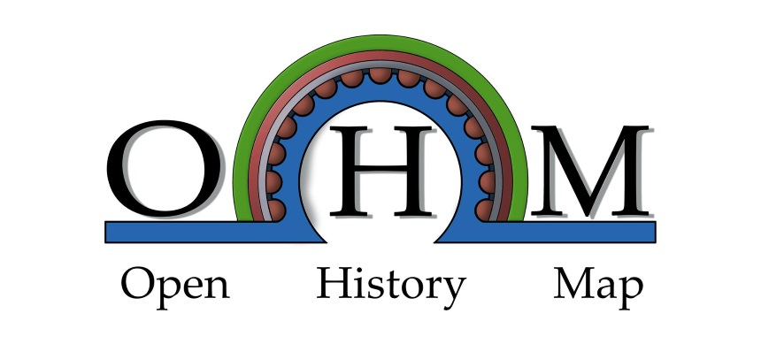

Unity Assets
Unity Bologna Assets
unity-bologna
The project contains unitypacks created to make the models available in
Bologna Open Data Portal
, created by CINECA, and transformed to enable anybody to create games on Bologna
Angular Libraries
ohm-core
ohm-core
Angular library to connect to the OHM backend, install via
npm install --save @ohmap/ohm-core
ohm-item
ohm-item
ohm-timeline
ohm-timeline
ohm-map
ohm-map
ohm-person
ohm-person